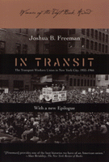

An award-winning history of the Transport Workers Union, and an example of radical organizing in action
An award-winning history of the Transport Workers Union, and an example of radical organizing in action


 An award-winning history of the Transport Workers Union, and an example of radical organizing in action
An award-winning history of the Transport Workers Union, and an example of radical organizing in action

|  |
In TransitThe Transport Workers Union in New York City, 1933-1966With a New EpilogueJoshua B. Freemanpaper EAN: 978-1-56639-922-7 (ISBN: 1-56639-922-X) |
Co-winner of the Taft Book Award, 1989
"[Freeman] provides one of the best histories we have of an American union. He also further illustrates to what degree the union battles of the 1930s emerged out of a cultural...milieu, rather than simply from economic position or class identity, and how those battles transformed that milieu by seeming to open new possibilities to men and women who only a few years earlier were resigned to a life of powerlessness and economic hardship."
—Alan Brinkley, The New York Review of Books
This history of New York transit workers from the Great Depression to the monumental 1966 transit strike shows how, through collective action, the men and women who operated the world's largest transit system brought about a virtual revolution in their daily lives. Joshua Freeman's detailed descriptions of both transit work and transit workers, and his full account of the formation and development of the Transport Workers Union provide new insight into the nature of modern industrial unionism. Freeman pays particular attention to the role of Communists and veterans of the Irish Republican Army—including TWU president Michael J. Quill—in organizing and leading the union, as well as to the Catholic labor activists who were the principal union dissidents. Freeman also explores the intense political struggles over the New York transit system. He links the TWU's pioneering role in public sector unionism to worker militancy and the union's deep involvement in New York politics. His portrait of Fiorello La Guardia's determined opposition to the TWU belies La Guardia's pro-labor reputation. By combining social and political history with the study of collective bargaining, In Transit makes a major contribution to the history of American labor, radicalism, and urban politics. Now with a new epilogue that frames the history of the union in the context of labor’s revival and recent changes in TWU’s leadership, In Transit is an intimate portrait of the politics of mass transit and public sector unionism, and one of the most detailed reconstructions to date of the social processes of industrial unionism. This book will appeal to anyone interested in New York City's subways, politics, history, and labor.
Excerpt available at www.temple.edu/tempress
"America's workers, in all their diversity, are finally finding their historians. None will be better served than are New York's transit workers by Joshua Freeman. On at least three counts Freeman's book is truly unexcelled—first, as a demonstration of how ethnicity—in this case, Irish ethnicity—has shaped the American unionizing process; second, as an incisive analysis of the role of communists within a CIO union; and, finally, as an account of the complex intermeshing of trade unionism and municipal politics. Mike Quill himself would have had to concede that his measure had been taken by this smart academic... Freeman has written a terrific book."
—David Brody University of California, Davis
"An extraordinary work whose impact will far transcend the circle of scholars interested in CIO unions of the Roosevelt era. Freeman's study of the TWU—a work firmly rooted in the new social history—successfully integrates organizational structures with a more traditional historiographical interest in politics and personality. He adds an extremely important dimension to our understanding of the social history of the New Deal era."
—Nelson Lichtenstein
"Joshua Freeman has done painstaking, exhausting research, producing a balanced book that is an exemplary model of labor-union history."
—Anthropology of Work
Preface to the New Edition
Preface
Part I: "History is a nightmare from which I am trying to awake"
1. The Transit Industry
2. Transit Workers
Part II: "Did you see the light?"
3. The Founding of the Transport Workers Union
4. Organizing the IRT, 1933-1936
5. Organizing: 1936-1937
Part III: "A revolution must come on the dues installments plan"
6. The Fruits of Victory
7. Catholics and Communists: Union Politics, 1937-1941
Part IV: "As . . . decent citizens of New York"
8. Public Transit and Transit Politics
9. Unification
Part V: "Events have abolished all debates"
10. Wartime
11. Breaking Out of New York
Part VI: "Fortune’s blows when most struck home . . . "
12. From the Grand Alliance to the Cold War
13. Fratricide
14. The New Order
Epilogue
Notes
Index
 | Joshua B. Freeman is Professor of History at Queens College, City University of New York. He is the co-author of Who Built America? and author, most recently, of Working-Class New York: Life and Labor Since World War II. |
Labor Studies and Work
History
Sociology
Labor in Crisis, edited by Stanley Aronowitz.
The hope for a revived progressive movement in American politics and culture depends to a large extent on the possibility of a revived labor movement. This series will stimulate debate and discussion about the state of the American labor movement and its relation to the future of America by publishing short, provocative books that offer varying analyses and prescriptions for labor's revival as well as diverse assessments of its prospects. Books in the series will be relevant to a vision of the labor movement that presupposes movements and people who care about the chances of more equality, more democratic participation in the institutions of political and social life, and more power for those traditionally excluded from economic and political decision making.
© 2015 Temple University. All Rights Reserved. This page: http://www.temple.edu/tempress/titles/1621_reg.html.